Crisálida
Reforço Escolar


Sobre o curso
arrow_upwardO curso Crisálida de reforço escolar é indicado para estudantes que desejam se recuperar em disciplinas, manter ou melhorar notas ou se preparar para exames. No entanto, acreditamos numa educação para muito além do currículo e trabalhamos por um ensino que possa ser levado para toda a vida.
Nossas aulas ocorrem em espaço próprio. São teóricas e práticas, com ensino, supervisão de estudos e resolução de exercícios. Também oferecemos suporte para tarefas e trabalhos escolares, auxiliando os discentes em todas as etapas de seu aprendizado.
Temos uma metodologia focada em identificar pontos fracos na aquisição de saberes dos alunos, assistindo-os na base de conteúdo que lhes falta. Mostramos-lhes que suas dificuldades podem ter origens na falta de oportunidade, jamais de capacidade, enquanto trabalhamos sua autoestima e autoconficança. Isso, é claro, sem deixar de atendê-los nos conteúdos mais recentes de suas matérias.
Damos aulas de todas as matérias, para alunos de todas as séries, em turmas de até 5 alunos. As aulas ocorrem de segunda a sexta-feira, com duração de 2 horas, nos horários de 8, 10, 14:30 ou 16:30 horas. Nossos pagamentos são mensais e adiantados, com início na primeira ou segunda aula. Nesse ano de 2025, cobramos R$250 mensais por 5 aulas semanais, R$230 por 4 aulas e R$210 por 3 aulas ou menos.
Vagas
arrow_upwardDevido a novos alunos que chegam ao longo do ano, nosso número de vagas está em constante mudança. As solicitações mais frequentes que recebemos são de pais e responsáveis que procuram por vagas à tarde. Mas, por limitarmos nossas turmas a 5 alunos, muitas vezes não conseguimos atender à essa demanda.
Logo abaixo tornamos público nosso quadro de vagas por dias e horários, atualizado em tempo real, para que pais e responsáveis possam saber de antemão de nossa disponibilidade. Mas isso não deve dissuadi-los de nossas tratativas em nível humano. Não tenham receio de nos abordar. Com ou sem vaga, ficaremos mais que felizes de responder a todos com o cuidado e atenção que merecem.
Número de vagas por dias e horários
Sobre o espaço
arrow_upwardO Crisálida Reforço Escolar fica localizado na av. Brasil, nº 216 C, bairro Candeias; próximo ao colégio Nova Escola; em frente à padaria Trigo Rei. Contamos com computador; quadro de vidro, magnético, preto, para uso com giz líquido colorido; materiais escolares; mural modular com ferramentas para trabalhos e uma pequena biblioteca cobrindo assuntos da alfabetização ao ensino médio. Também dispomos de mesa ampla com boa iluminação; cadeiras confortáveis; uma rede wi-fi protegida, para clientes, e outra livre, para a comunidade; carregador para todos os tipos de celular, ar-condicionado, banheiro e água mineral. Confiram em imagens:
 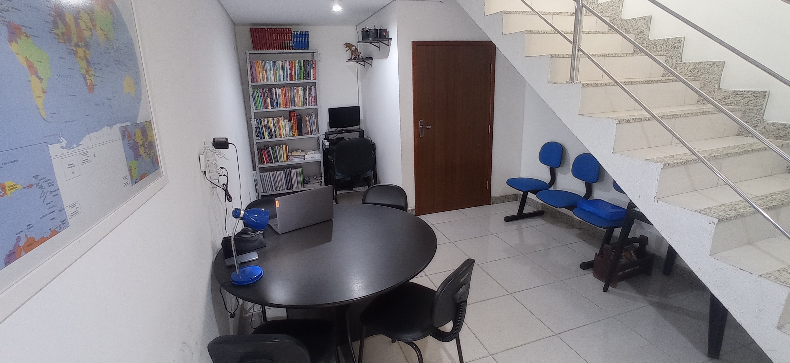
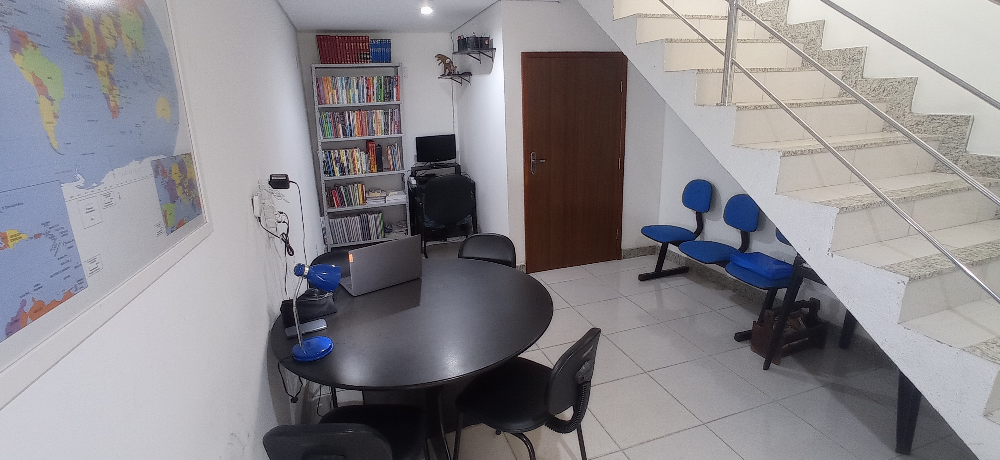
 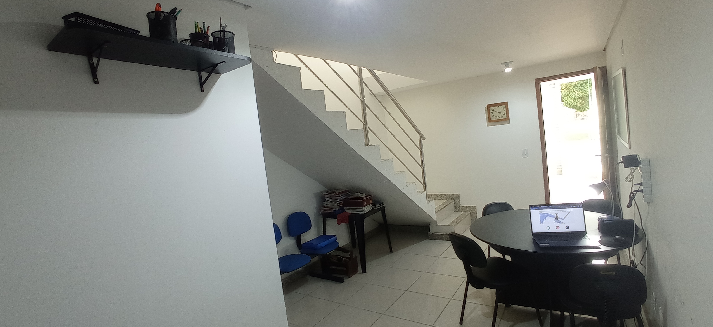
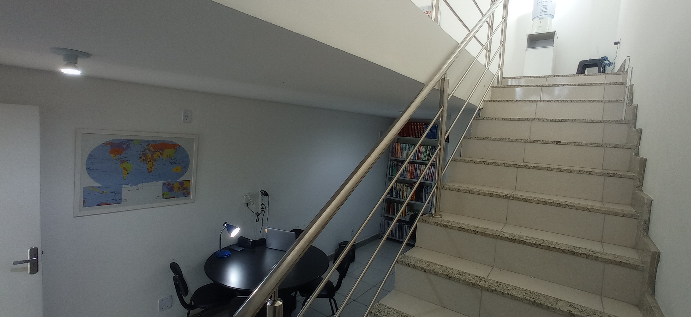
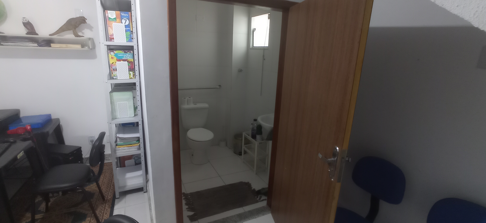
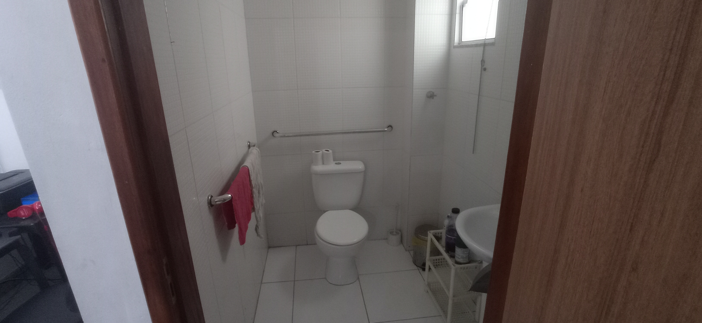
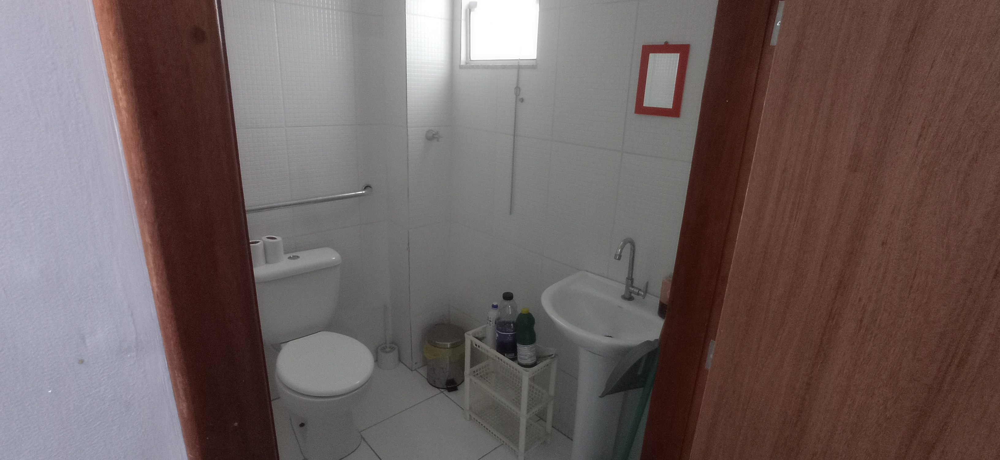
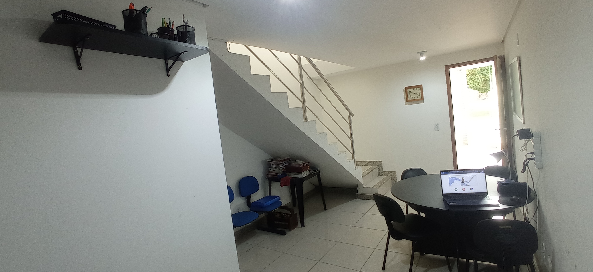
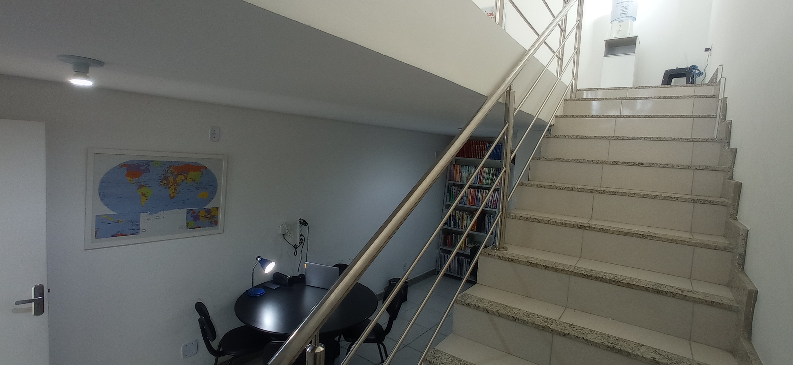
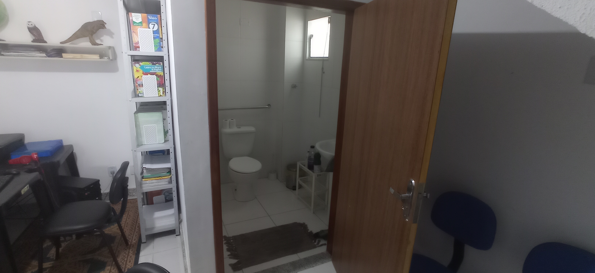
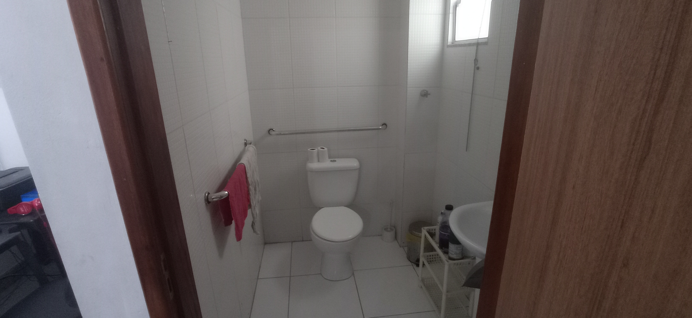
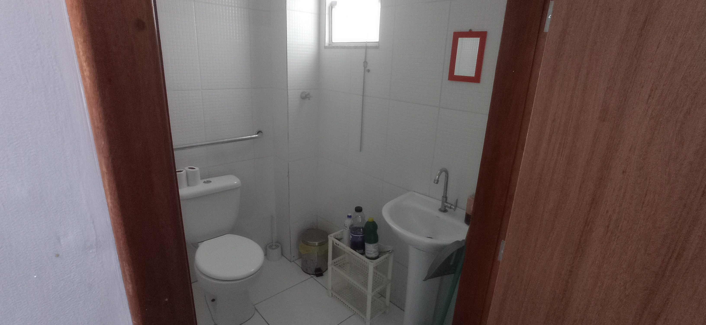
Sobre o professor
arrow_upwardLeon Lacerda é formado em Ciências Sociais pela UFMG e estudou Ciência da Computação na UESB. Há 9 anos, desde 2016, trabalha como professor de reforço escolar e ama o que faz. Tem também experiência com alfabetização, tendo alfabetizado muitas crianças. Afora o currículo convencional, escreve ficção, sendo apaixonado pela escrita e pela língua portuguesa.
Seu caminho tortuoso o familiarizou com as Ciências Humanas, com as Exatas e com a nossa língua, assim como o deixou à vontade para ensinar esses assuntos no Ensino Fundamental e Médio, sempre com deferência pelo grau de conhecimento e ritmo de cada um.
A inteligência para o aprendizado formal é bastante superestimada. Para a transmissão de conteúdo, tem-se que respeitar uma pirâmide. Você não pode ensinar soma de fração para quem não aprendeu MMC. Há que se reconstruir a pirâmide. Por trás de uma dificuldade escolar muitas vezes está um ensino massificado sem atenção à individualidade de cada um. Exatamente mitigar essa dificuldade é o papel do professor de reforço. Mas podemos fazer ainda mais. Podemos inspirar, incentivar e oferecer possibilidades.
Leon é fluente em Inglês e há longa data desenvolve habilidades em programação e programas gráficos: de edição de texto, imagem e vídeo, de vetorização, diagramação, etc. Tudo isso ele pode, se não ensinar — não se perde o foco de ensino que é de matéria escolar —, indicar para seus alunos. Sua principal virtude, porém, não é nada mais que o carinho, o respeito, a dedicação e a paciência. Mesmo método algum jamais superou isso. Então não se preocupe, seu(ua) filho(a) ou tutelado(a) estará seguro(a), dispondo de ótimo tratamento e serviço!
Contato
arrow_upward
Nosso meio de contato preferencial é, sem dúvida, pelo Whatsapp: (77) 991-245-948. Mas você também pode nos contactar pelo nosso instagram: @crisalida.re; ou email: contato@crisalida.pro.br. Pode ainda nos conhecer pessoalmente em nosso espaço físico, na avenida Brasil, nº 216 C, bairro Candeias. Fique à vontade para nos fazer uma visita!